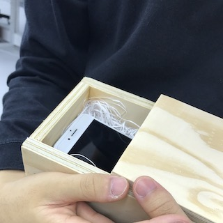
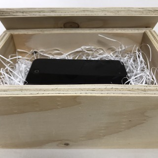
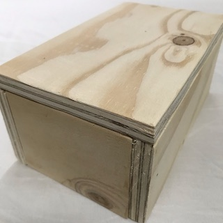
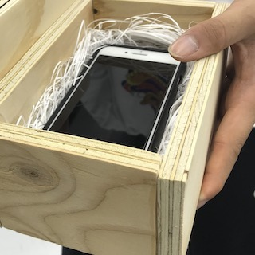

棺オケース
   
コンセプト
自分以上に自分な物への恐怖
ターゲット
スマートフォン依存者
使い方
1.スマートフォンを自分だと思いながら丁寧に画面などの汚れを落とす。（クリーナー等で）
2.棺の蓋を開けてスマートフォンを入れる。
3.しばしの間もう一人の自分（スマホ）とはお別れをするんだと思いながら瞑想。
4.蓋を閉めてどこかに置く。
5.スマートフォンが無いあなたは今から何をするんでしょう。